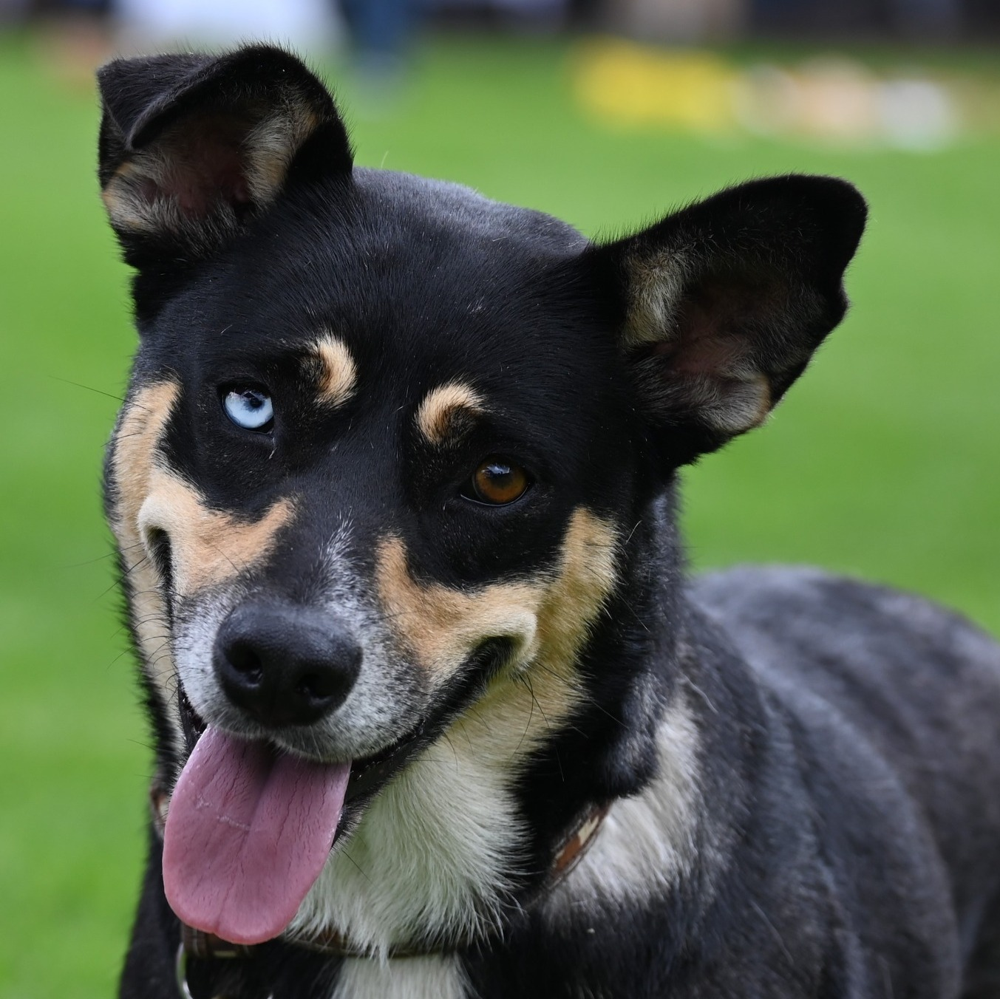
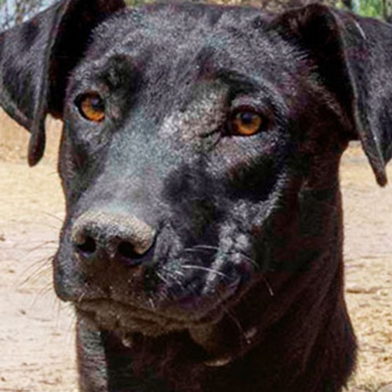
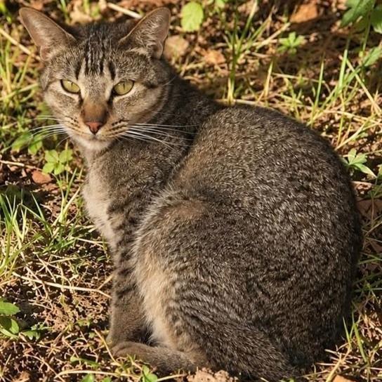
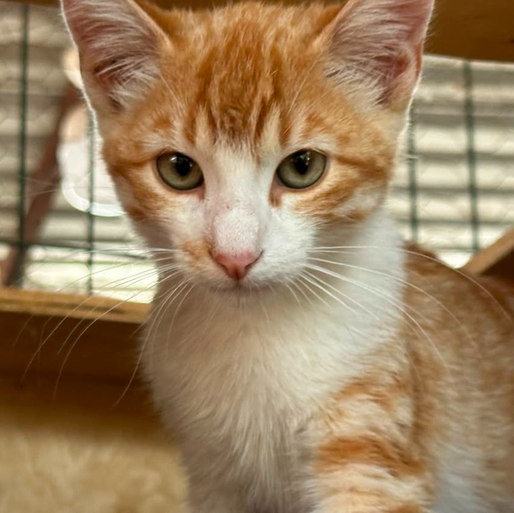
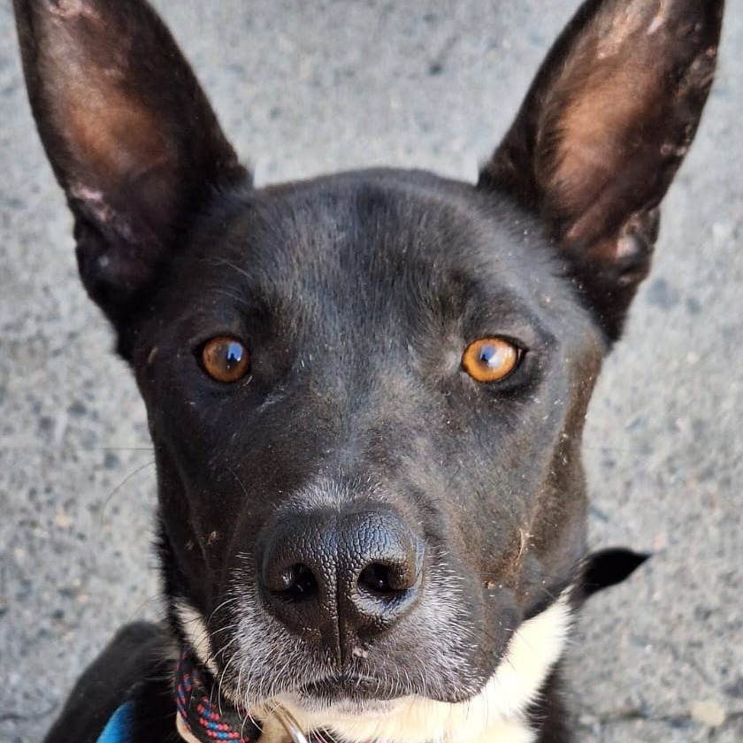
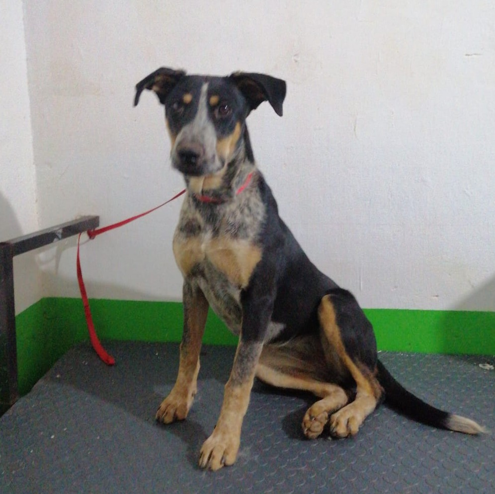
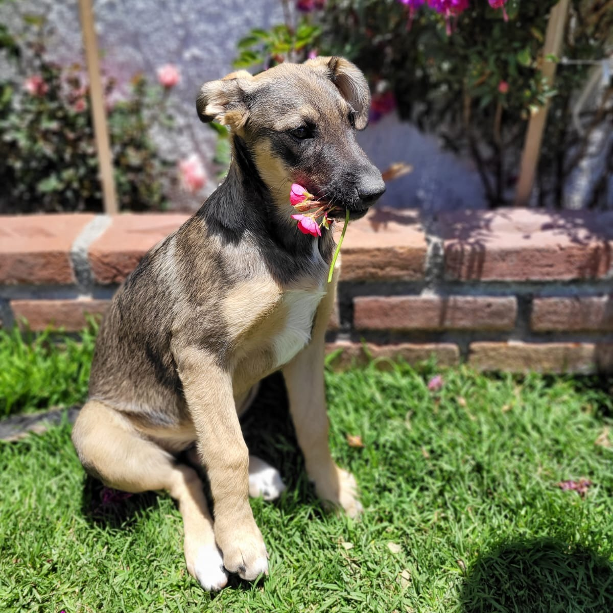
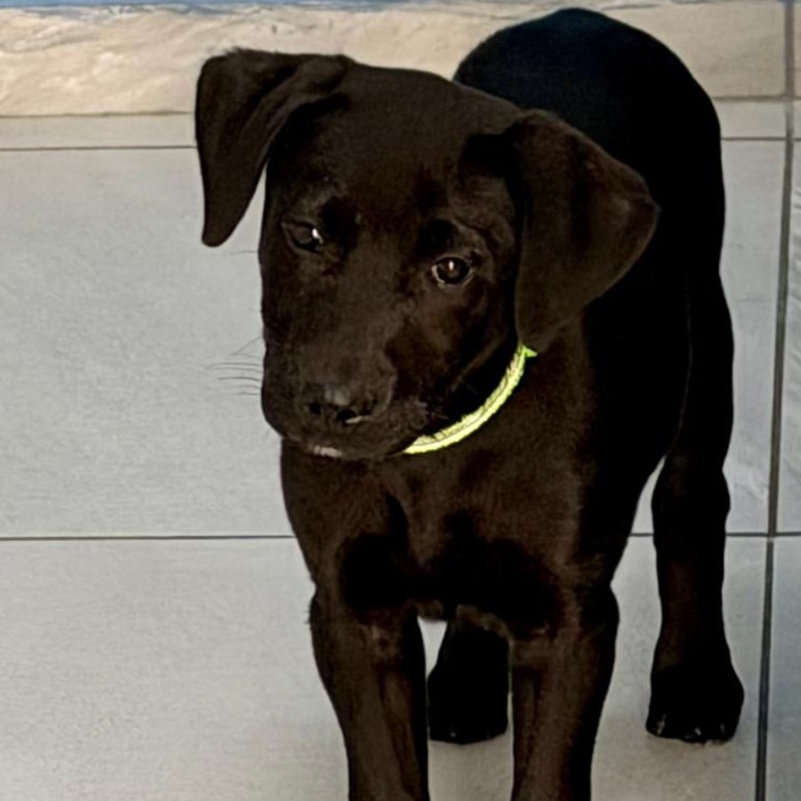

Bonita
Edad: 5 años
Personalidad: Una perrita muy tranquila, inteligente y que le encanta hacer compañía a los humanos. Le gusta dormir panza arriba
Adoptar a BonitaUn hogar lleno de amor comienza con una adopción
Conoce a nuestros amigos que buscan una familia. ¡Tal vez aquí encuentres a tu nuevo mejor amigo!

Edad: 5 años
Personalidad: Una perrita muy tranquila, inteligente y que le encanta hacer compañía a los humanos. Le gusta dormir panza arriba
Adoptar a Bonita
Edad: 4 años
Personalidad: una perrita tranquila, temerosa, cariñosa y juguetona, le gusta estar con personas y disfruta las caminatas.
Adoptar a abby
Edad: 4 año
Personalidad: sociable y juguetón
Adoptar a Milo
Edad: 1 años
Personalidad: tranquila, tímida.
Adoptar a Nala
Edad: 4 años
Personalidad: acunado, desparasitado, esterilizado, perro activo, excelente guardián y preferentmente familias sin niños pequeños
Adoptar a Rocky
Edad: 4 año
Personalidad:Es sociable y cariñosa. Le gusta mucho jugar rudo
Adoptar a Bibi
Edad: 7 meses
Personalidad: es muy tranquila e inteligente, convive con todo tipo de perros y gatos.
Adoptar a Mia
Edad: 4 meses
Personalidad: dulce ,obediente ,sociable.
Adoptar a TobyTodos los animales merecen una oportunidad. Antes de adoptar, asegúrate de poder ofrecerles tiempo, cuidados, alimentación y mucho cariño.